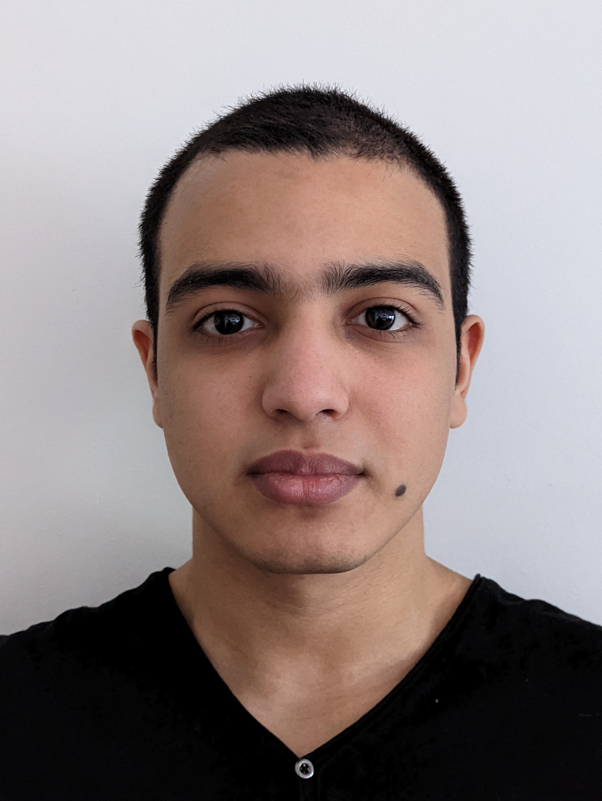

Hi, my name is Yanis El Beilk.
I'm a Software Developer and Sysem & Network Administrator.
I'm a 21 years old french student in the engineering school ESME and I study computer science, I'm looking for a 3 month internship for summer 2023.
Get Started
Hi! My name is Yanis El Beilk, I'm 21 and I develop and learn things on my free time. I like learning about the improvment and new software from the linux community.
I made some universty project like a three game, mobile applications, this portofolio and I intent to do a lot more in the futur.
In 2019, I entered in the Sorbonne Paris North University at the Villetaneuse campus.
I studied computer science for a two year technical degree, during these two years, I discovered a lot of technologies and theorical concepts,
but I also put my knowledge into practice in various projects... (see the project part of the site)
In 2021, I entered at the ESME for becoming an engineer specializing in computer science. I started this course in apprenticeship,
that mean I work between my study as a System & Network Administrator in a company called Videomuseum.

This project is my first as a student, It's the development of the threes game in the command line.
You can play this game by entering the first letter in French of the direction top, bottom, left, right.
The Beballer project is the most important project I had to do during my technical degree, It was a project with important client, a start up called beballer. They wanted to create a social media application around the basketball. Two teams of student was working on the project, a back-end team and a front-end team, I was in the last team.
This project is a website portfolio made to present my computer science projects. It is a responsive website programmed with HTML, CSS, and Javascript...